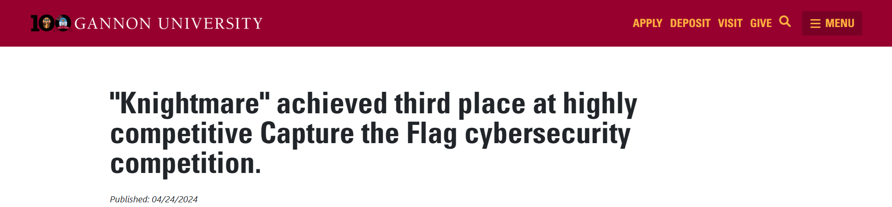

Gannon University Cybersecurity Team – 3rd Place
Competed in a high-level cybersecurity event solving challenges in network security, cryptography, web vulnerabilities, and OSINT. The team demonstrated collaboration, critical thinking, and real-time problem-solving against experienced opponents.
I focused on reconnaissance, OSINT, and hidden file challenges. This included locating concealed files in Kali Linux environments, extracting metadata from digital artifacts, and mapping social media activity to real-world locations. These efforts directly contributed to the team's score and success.
The competition tested rapid problem-solving skills and cybersecurity methodology. Highlights include successful extraction of hidden files and OSINT correlation, contributing to our overall 3rd-place finish.
